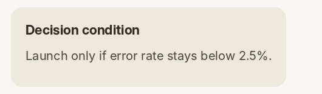
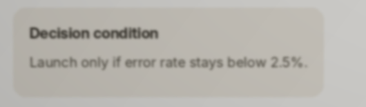
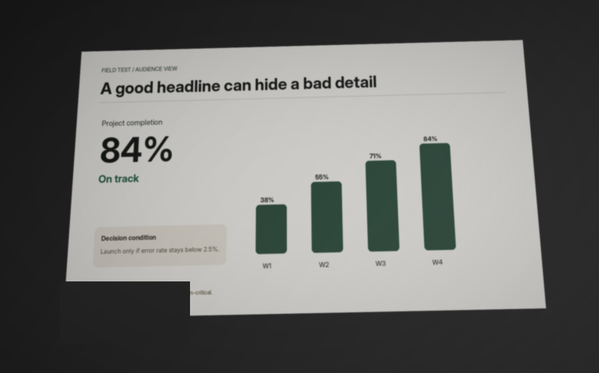
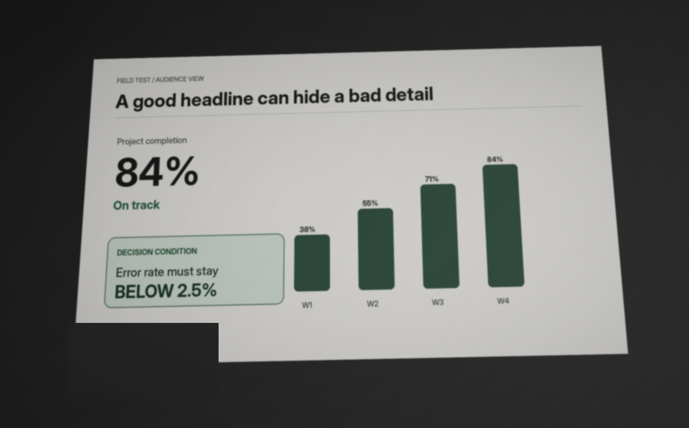

BRBACKROW
01 / 07VOICE READY
PHYSICAL PRESENTATION PATH
The audience sees the room, not your source file.
BACKROW tests what survives the path from slide → projector → room → audience position.
2.5%
BACK ROW
8.4 m
EXACT INFORMATION LOSS
The information changed.
AT RISK

2.5%→

25%Not a style score. The critical value itself was recovered differently.
LIVE PRODUCT
BACKROW finds the slide and localizes the failure.
RUNNING JUDGE CASE
WHAT IS ACTUALLY AI
One learned component. Several deterministic safeguards.
CUSTOM AIAudienceNet 2.0paired source / camera / room features
PRETRAINED AITesseract 5 LSTMexact text and numeric recovery
CLASSICAL CVORB · RANSAC · homographypage retrieval and perspective rectification
HARD EVIDENCEnumeric contradiction guarddirect evidence outranks model confidence
FIX → RESCAN → PROVE
The result is a repair loop, not a score.

2 AT RISK→

0 AT RISKSCIENTIFIC BOUNDARY
Camera evidence is not human eyesight.
BACKROW separates what is already verified from what still requires real readers in real rooms.
VERIFIED ENGINEERING
Physical capture pipeline
slide retrieval · rectification · exact OCR evidence · numeric guard · fix/rescan
→
LOCKED HUMAN STUDY
Naïve readers, hidden truth
frozen order · timed exposure · immutable responses · confidence intervals · kill gates
→
CLAIM DISCIPLINE
No fake human-accuracy number
procedural model metrics stay labeled as engineering evidence until physical validation is complete
BACKROW
Presenter sees the source. Audience sees the room.
BACKROW tests the room.
CHOOSE A SLIDE.